ОБ ОБЩЕЧЕЛОВЕЧЕСКОМ
Как стать хорошим иллюстратором
Начать хочу с цитаты: «Удивительно, как графика художников всегда похожа на их линии тела и лица, и так это видно не только в рисунках людей, а вообще в манере вести любые линии. дома, любые предметы и вся динамика картинок копирует своих авторов, их щеки, попы, руки, ноги и все остальное, даже жестикуляцию и манеру двигаться. и наблюдая за незнакомым человеком,кажется, можно сразу сказать, какие у него будут рисунки я очень часто хочу стать худой, костлявой и жилистой и рисовать нервные энергичные рисунки со всеми костями и косточками», — пишет Маша Екимова.
В общем, нечего добавить, кроме: не знаю, известно ли вам, что первейший инструмент художника-аниматора это не карандаш, а зеркало, перед которым часами отрабатываются особенности мимики персонажа. Может быть, вся эта история с рисованием себя характерна именно для иллюстрации оттого, что именно нам приходится все время рисовать «каких-то» людей, что называется, из головы, и тут уж никто не может устоять от того, чтобы нарисовать себя. В конце концов, себя мы знаем лучше всего. И еще: как я рад, что Маша имеет черты скорее мягкие и спокойные.
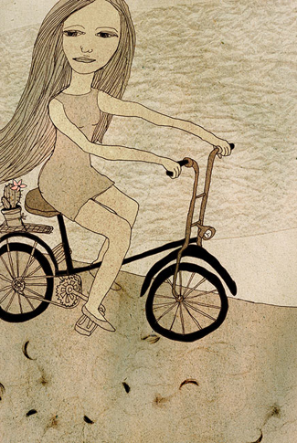
И вообще. Мне представляется, что по движению линии можно определить не только комплекцию художника, но и некоторые базовые общечеловеческие свойства. Довольно захватывающее занятие, пытаться достроить автора из его работ, другое дело, что упомянутые свойства не всегда имеют название. Но именно они играют решающую роль в тот момент, когда зритель решает, нравится или не нравится ему иллюстрация.
Есть, конечно, люди (называются артдиректоры, например), которые в своих оценках руководствуются исключительно такими материями, как качество, профессионализм и т.д., но то люди подневольные; и даже у них оценка сначала происходит интуитивно, а потом уже к ней прирастают аргументы за или против. К любому замечанию можно приставить знак плюс или минус, «фу!» или «ах!»: «Фу, как криво» или «ах, как криво».
Глобальных законов, по которым можно судить труд художника, не может быть: все, в конечном счете, упирается в субъективные ощущения зрителя, слушателя и т.д.
Это верно и для любой другой ветви изобразительного искусства, и даже не только изобразительного. Среди музыкантов одного поколения, работающих в одном и том же жанре, на одинаковых инструментах, можно встретить любовь на всю жизнь и глубоко неприятного исполнителя, и даже не всегда поймешь, чем отличаются, ан… Поэтому мне, например, совершенно непонятны люди, которые говорят «я люблю джаз», или (еще лучше) «рок». Обмануть зрителя невозможно; один поворот линии или какой-нибудь глазик, который и разглядишь-то не сразу, может переключить в мозгу какой-то тонкий тумблер. В этом смысле ничто не гарантирует успеха (в том, чтобы понравиться зрителю), ни образование, ни опыт, ни даже тщание. Мне известно (заочно) множество высоко профессиональных художников, личных встреч с которыми я, при всем уважении, стараюсь избегать.
Но нет-нет-нет. В качестве примеров я вешаю только те работы, которые, вместе с их авторами по-человечески милы лично мне, независимо от техники и чего бы то ни было (с которым все в порядке, тем не менее).
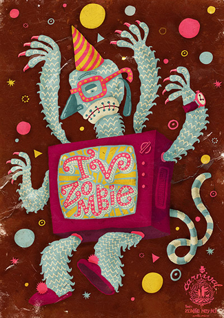
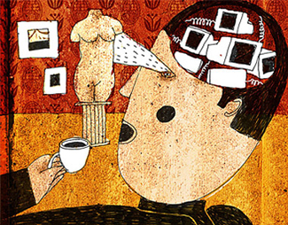
В этой работе, как и в любой другой, Годунов виден как на ладони, хотя вряд ли очевидно, что человек это двух-с лишним-метрового роста. Так что не все так просто, как говорится.
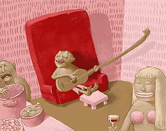
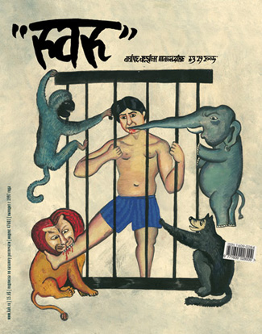
Все упомянутые выше — участники объединения «Цех». Скажете кумовство? Но их работы наилучшим образом иллюстрируют мою мысль ровно потому, что объединение собиралось как раз по принципу взаимной симпатии (как минимум), которая в доброй половине случаев родилась заочно и при встрече не подвела. В нашем деле беспристрастие, я считаю, недопустимо, но все же удержусь от искушения вывесить тут всех остальных и разбавлю зарубежными образцами:
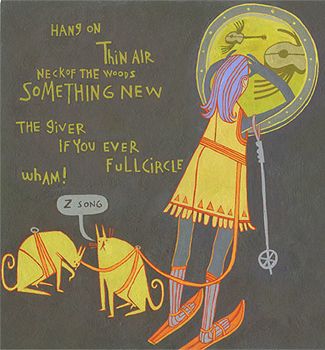
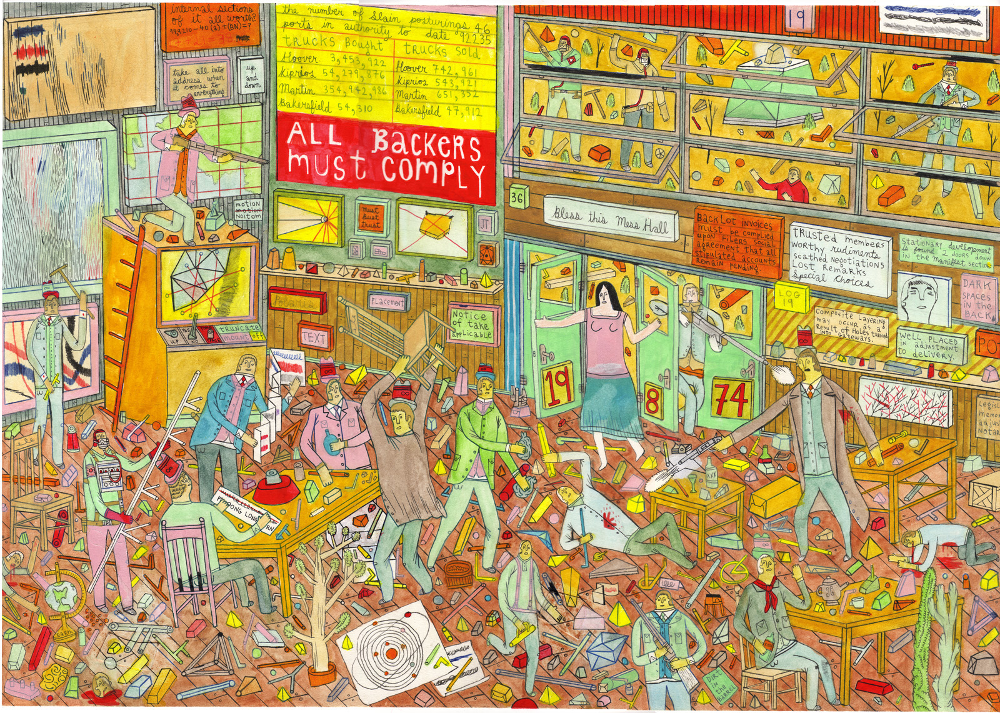
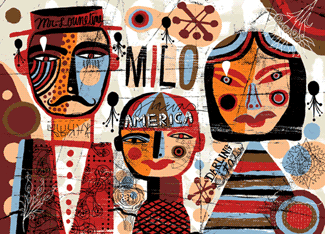
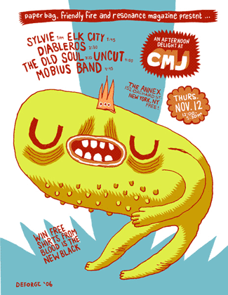
Michael Deforge, 19 лет. Таких действительно тысячи (в том числе у нас тут), но отчего-то не все одинаково греют душу.
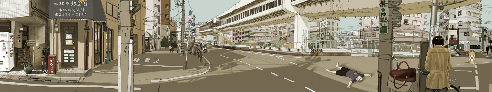
Подводя итоги, мораль из всего вышесказанного следует, видимо, известная митьковская (за точность цитаты не отвечаю): «Надо быть хорошим». Хотя как это — опять же, непонятно.
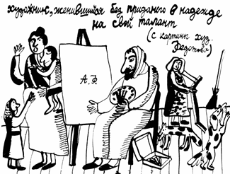